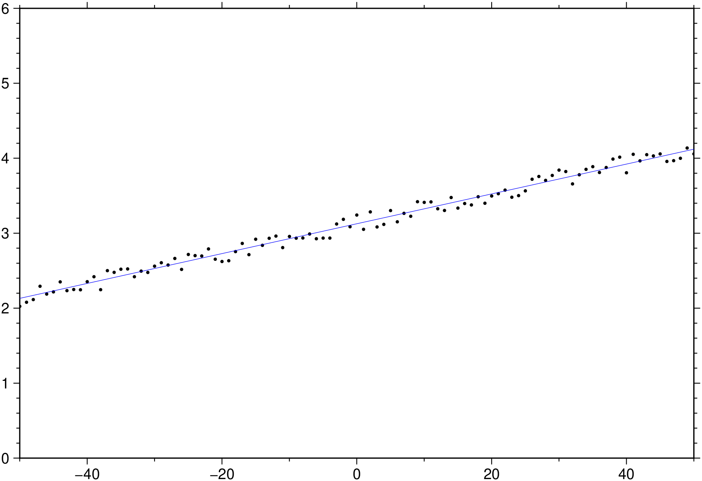
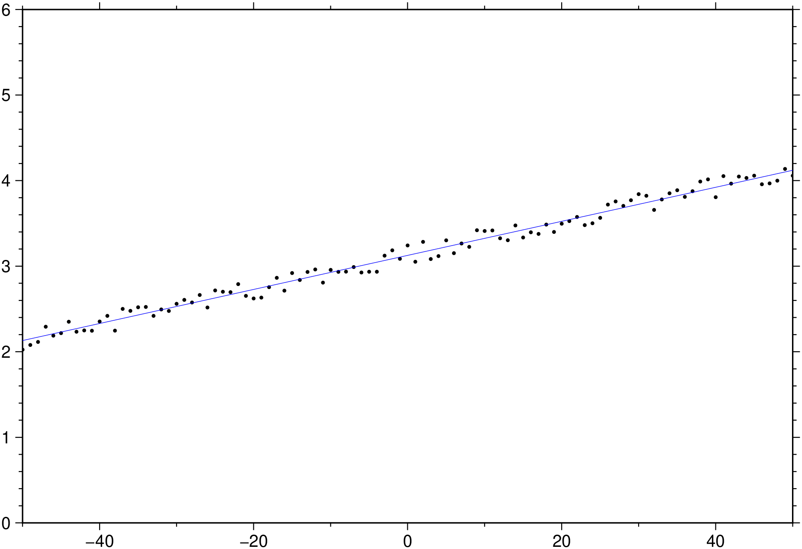
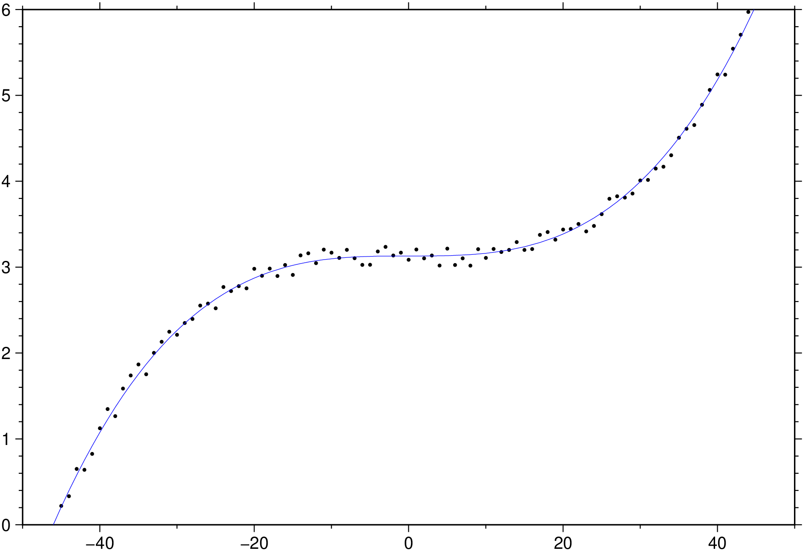

using GMT
x = -50.0:50;
y = x / 50 .+ 3 .+ 0.25 * rand(length(x));
D = trend1d([x y], model=(polynome=1), out=:xm);
plot(x,y, region=(-50,50,0,6), marker=:point)
plot!(D, lc=:blue, show=true)
Fit [weighted] [robust] polynomial/Fourier model for y = f(x) to xy[w] data.
trend1d reads x,y [and w] values from the first two [three] columns and fits a regression model y = f(x) + e by [weighted] least squares. The functional form of f(x) may be chosen as polynomial or Fourier or a mix of the two, and the fit may be made robust by iterative reweighting of the data. The user may also search for the number of terms in f(x) which significantly reduce the variance in y.
table
Data table(s) containing x,y [w] values in the first 2 [3] columns.
F or out or output : – out=:xymrw | out=:p|:P|:c
Specify up to six letters from the set {x y m r w} in any order to create columns of output. x = x, y = y, m = model f(x), r = residual y - m, w = weight used in fitting. Alternatively, choose just the single selection out=:p to output a record with the polynomial model coefficients, P for the normalized polynomial model coefficients, or c for the normalized Chebyshev model coefficients.
N or model : – model=n | model=“[p|P|f|F|c|C|s|S|x]n[,…][+llength][+oorigin][+r]”
Specify the components of the (possibly mixed) model. Add one or more comma-separated model components. Each component is of the form ?n, where ? indicates the basis function and n indicates the polynomial degree or how many terms in the Fourier series we want to include. Choose ? from p (polynomial with intercept and powers of x up to degree n), P (just the single term x^n), f (Fourier series with n terms), c (Cosine series with n terms), s (sine series with n terms), F (single Fourier component of order n), C (single cosine component of order n), and S (single sine component of order n). By default the x-origin and fundamental period is set to the mid-point and data range, respectively. Change this using the +oorigin and +llength modifiers. We normalize x before evaluating the basis functions. Basically, the trigonometric bases all use the normalized x’ = (2pi(x-origin)/length) while the polynomials use x’ = 2*(x-x_mid)/(xmax - xmin) for stability. Finally, add +r for a robust solution [Default gives a least squares fit]. Use verbose to see a plain-text representation of the y(x) model specified in model.
An alternative syntax is via long options: – model=(polynome=deg, fourier=deg, cosine=deg, sine=deg, single=true, length=xx, origin=xx, robust=true)
Where deg is the polynomiala degree or how many terms in the Fourier series. The single option forces the use that single deg term (equivalent to the upper case letter in the terse syntax). length, origin, robust have the meaning of the +l, +o, +r options explanied above. To choose mixed models, we must enclose each model in a named tuple and only the last one may contain the length, origin, robust options. For example model=((polynome=2,),(fourier=1, single=true, origin=0, length=25)).
C or condition_number : – condition_number=number
Set the maximum allowed condition number for the matrix solution. trend2d fits a damped least squares model, retaining only that part of the eigenvalue spectrum such that the ratio of the largest eigenvalue to the smallest eigenvalue is condition_#. [Default: condition_# = 1.0e06].
I or conf_level : – conf_level=true | conf_level=level
Iteratively increase the number of model parameters, starting at one, until n_model is reached or the reduction in variance of the model is not significant at the confidence_level level. You may set conf_level=true only, without an attached number; in this case the fit will be iterative with a default confidence level of 0.51. Or choose your own level between 0 and 1. See remarks section. Note that the model terms are added in the order they were given in model so you should place the most important terms first.
V or verbose : – verbose=true | verbose=level
Select verbosity level. More at [verbose](../common_opts/opt_V.html)
W or weights : – weights=true | weights=“+s|+w”
Weights are supplied in input column 4. Do a weighted least squares fit [or start with these weights when doing the iterative robust fit]. Append +s to instead read data uncertainties (one sigma) and create weights as 1/sigma^2, or use the weights as read (+w) [Default reads only the first 2 columns].
bi or binary_in : – binary_in=??
Select native binary format for primary table input. More at
bo or binary_out : – binary_out=??
Select native binary format for table output. More at
di or nodata_in : – nodata_in=??
Substitute specific values with NaN. More at
e or pattern : – pattern=??
Only accept ASCII data records that contain the specified pattern. More at
f or colinfo : – colinfo=??
Specify the data types of input and/or output columns (time or geographical data). More at
g or gap : – gap=??
Examine the spacing between consecutive data points in order to impose breaks in the line. More at
h or header : – header=??
Specify that input and/or output file(s) have n header records. More at
i or incol or incols : – incol=col_num | incol=“opts”
Select input columns and transformations (0 is first column, t is trailing text, append word to read one word only). More at incol
q or inrows : – inrows=??
Select specific data rows to be read and/or written. More at
s or skiprows or skip_NaN : – skip_NaN=true | skip_NaN=“<cols[+a][+r]>”
Suppress output of data records whose z-value(s) equal NaN. More at
w or wrap or cyclic : – wrap=??
Convert input records to a cyclical coordinate. More at
yx : – yx=true
Swap 1st and 2nd column on input and/or output. More at
The domain of x and y will be shifted and scaled to [-1, 1] and the basis functions are built from Chebyshev polynomials. These have a numerical advantage in the form of the matrix which must be inverted and allow more accurate solutions. In many applications of trend2d the user has data located approximately along a line in the x,y plane which makes an angle with the x axis (such as data collected along a road or ship track). In this case the accuracy could be improved by a rotation of the x,y axes. trend2d does not search for such a rotation; instead, it may find that the matrix problem has deficient rank. However, the solution is computed using the generalized inverse and should still work out OK. The user should check the results graphically if trend2d shows deficient rank. NOTE: The model parameters listed with verbose are Chebyshev coefficients; they are not numerically equivalent to the m#s in the equation described above. The description above is to allow the user to match model with the order of the polynomial surface. For evaluating Chebyshev polynomials, see grdmath.
The model=“n_model+r” (robust) and conf_level (iterative) options evaluate the significance of the improvement in model misfit Chi-Squared by an F test. The default confidence limit is set at 0.51; it can be changed with the conf_level option. The user may be surprised to find that in most cases the reduction in variance achieved by increasing the number of terms in a model is not significant at a very high degree of confidence. For example, with 120 degrees of freedom, Chi-Squared must decrease by 26% or more to be significant at the 95% confidence level. If you want to keep iterating as long as Chi-Squared is decreasing, set conf_level to zero.
A low confidence limit (such as the default value of 0.51) is needed to make the robust method work. This method iteratively reweights the data to reduce the influence of outliers. The weight is based on the Median Absolute Deviation and a formula from Huber [1964], and is 95% efficient when the model residuals have an outlier-free normal distribution. This means that the influence of outliers is reduced only slightly at each iteration; consequently the reduction in Chi-Squared is not very significant. If the procedure needs a few iterations to successfully attenuate their effect, the significance level of the F test must be kept low.
To remove a linear trend from data.xy by ordinary least squares, use:
To make the above linear trend robust with respect to outliers, use:
To fit the model y(x) = a + bx^2 + c * cos(2pi3(x/l) + d sin(2pi3*(x/l), with l the fundamental period (here l = 15), try:
To find out how many terms (up to 20), say in a robust Fourier interpolant are significant in fitting data.xy, use:

Fit with a constant and the cubic term only.
using GMT
x = -50.0:50;
y = 4 * (x / 50) .^3 .+ 3 .+ 0.25 * rand(length(x));
D = trend1d([x y], model=((polynome=0,single=1),(polynome=3,single=true)), out=:xm);
# Or, if the condensed form is prefered
#D = trend1d(xy, model="P0,P3", out=:xm);
plot(x,y, region=(-50,50,0,6), marker=:point)
plot!(D, lc=:blue, show=true)
Fit a linear trend and a sinusoid
This function has multiple methods:
trend1d(cmd0::String; ...) - trend1d.jl:40trend1d(; ...) - trend1d.jl:40trend1d(arg1; kw...) - trend1d.jl:98trend1d(cmd0::String, arg1; kwargs...) - trend1d.jl:40Huber, P. J., 1964, Robust estimation of a location parameter, Ann. Math. Stat., 35, 73-101.
Menke, W., 1989, Geophysical Data Analysis: Discrete Inverse Theory, Revised Edition, Academic Press, San Diego.